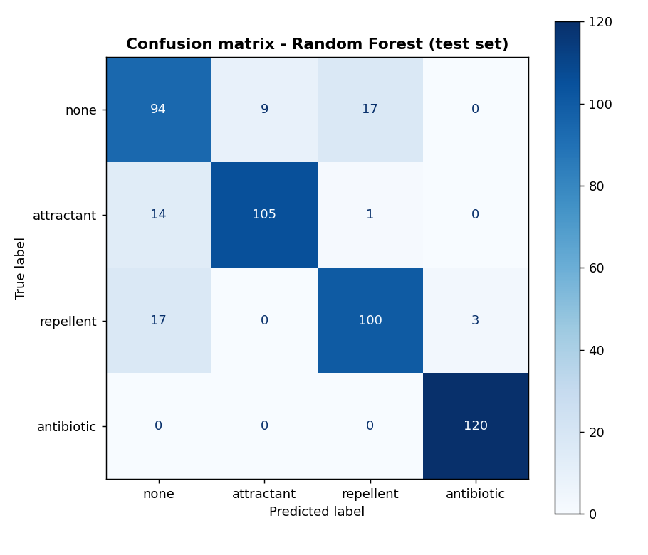
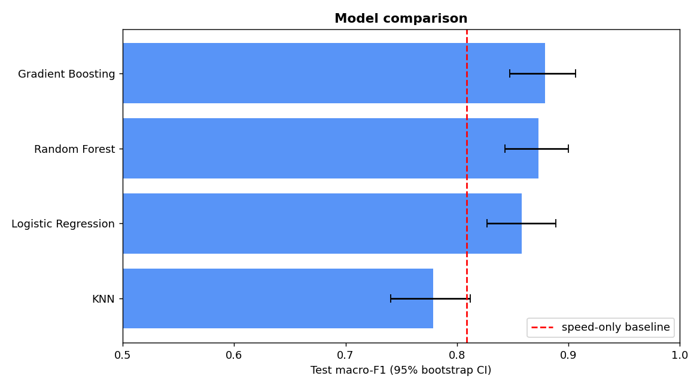
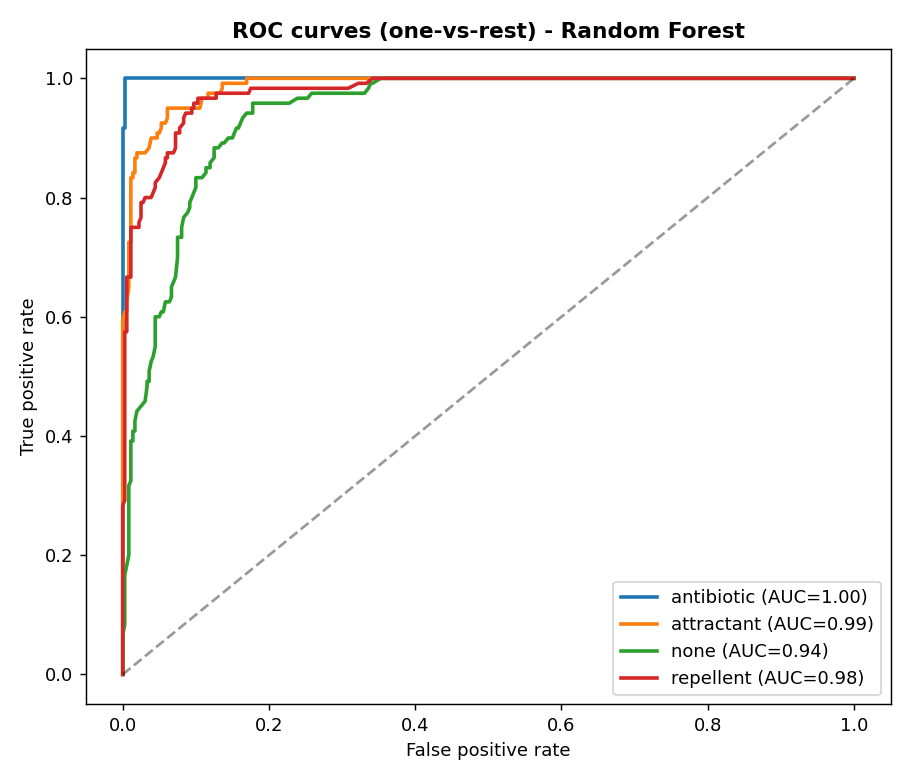
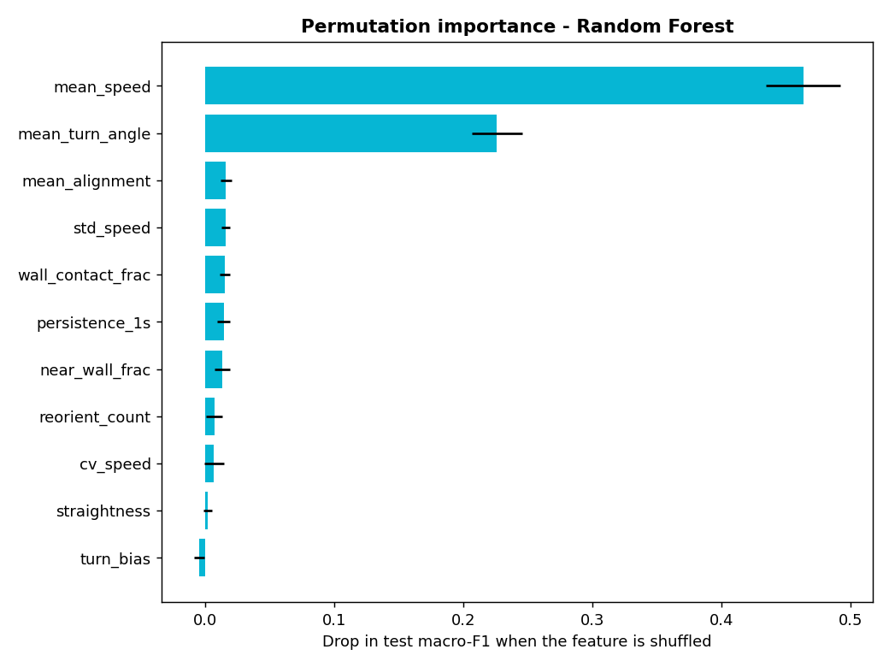
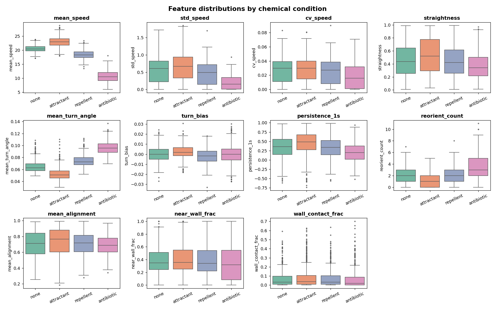
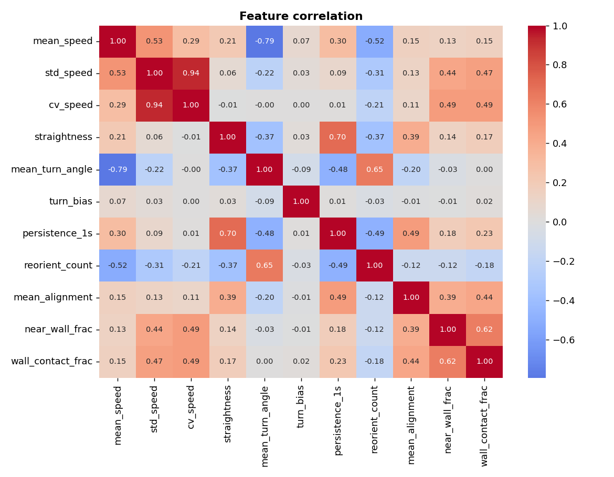
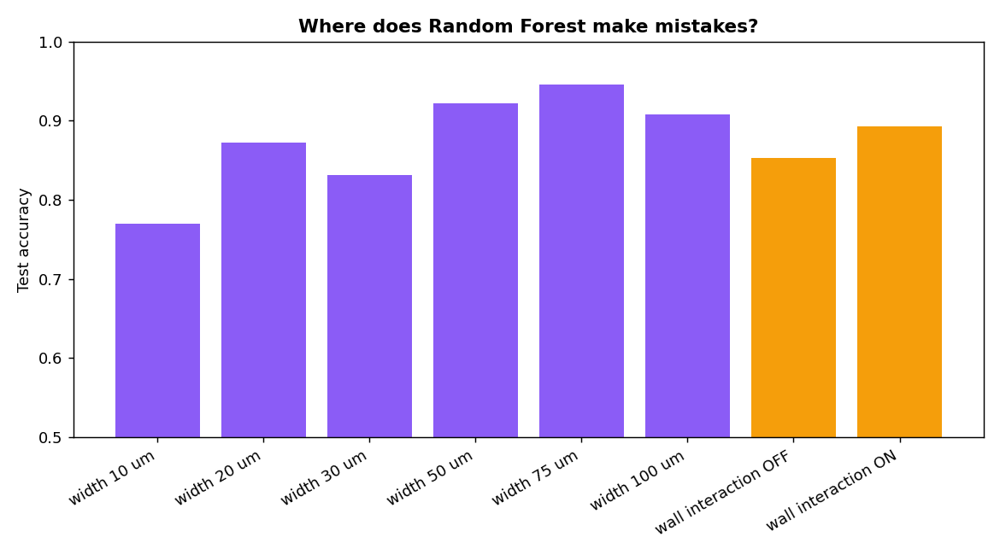

Given a simulated E. coli trajectory in a micro-channel, can ML identify the chemical stimulus — purely from how the bacterium swims?
⚠️ The dataset is synthetic — generated by the project's own physics simulator. Performance reflects simulated separability, not real-lab validation.
E. coli swim by rotating helical flagella, alternating between straight “runs” and random “tumbles”. Chemical stimuli change this behaviour in ways that can be measured from trajectory data.
The simulator generates 6-second trajectories in narrow micro-channels under four chemical conditions. The ML models are trained on 11 trajectory features (speed, path shape, wall contact) to predict which chemical condition the bacterium was swimming in. The target label is the simulation ground truth — there is no label circularity.
Baseline swimming with normal speed and tumble rate. No chemical stimulus applied.
Faster swimming, straighter runs, reduced tumbling — the bacterium moves toward the source.
Slightly slower with more rotational noise and a negative drift away from the source.
Significantly slower (~52% speed), much higher rotational diffusion and tumble rate. Near-perfect detection.
What the model can demonstrate: how separable these simulated conditions are from motion features alone.
What it cannot: real-world clinical or laboratory validity.
2,400 synthetic trajectories generated by scripts/generate_dataset.py
| Feature | Description | Mean | Std | Min | Max |
|---|
Data provenance: synthetic, generated by src/simulation.py with deterministic seeds.
6 channel widths × 4 chemicals × 2 wall settings × 50 replicates = 2,400 rows.
4 tuned classifiers compared against baselines, evaluated on a held-out test set (480 samples, used once)
| Class | Precision | Recall | F1-Score |
|---|
Evaluation split: 80/20 stratified. Model selected by 5-fold CV macro-F1 on training set. 95% bootstrap CI from 1,000 resamples of test predictions.
Pre-computed real simulator trajectories with the trained model’s actual predictions
src/simulation.py) and the saved Random Forest model
(models/best_model.joblib). This static dashboard displays
precomputed results — it does not execute Python in the browser.
Changing a control selects a different precomputed example.
Evaluation plots generated by scripts/evaluate.py from actual model predictions

Confusion matrix — Random Forest on the held-out test set (480 samples). Most errors are none/repellent confusion.

Model comparison with 95% bootstrap confidence intervals. The red dashed line is the speed-only baseline.

One-vs-rest ROC curves for Random Forest. Antibiotic achieves near-perfect AUC.

Permutation importance — drop in test macro-F1 when each feature is shuffled. Speed features dominate.

Feature distributions by chemical condition. Note the clear speed separation for antibiotic.

Feature correlation heatmap. Speed features are correlated; wall features form a separate cluster.

Accuracy by channel width and wall setting. Narrow channels (10 µm) are hardest due to constant wall collisions.
The actual project workflow — every step links to its script or module
git clone https://github.com/Saniya1312S/Bacterial-MotionAI-ML.git
cd Bacterial-MotionAI-ML
pip install -r requirements.txt
python scripts/generate_dataset.py # ~15 seconds
python scripts/eda.py
python scripts/train.py # a few minutes (grid search)
python scripts/evaluate.py
python -m pytest tests -q
streamlit run streamlit_app.py # interactive demo with the real modelWhat this project does and does not demonstrate
src/simulation.py.Everything you need to explore, reproduce, and extend the project
Source code, data, models, and results
Full project documentation and methodology
2,400 rows, 11 features, 4 balanced classes
Interactive walkthrough with saved outputs
GridSearchCV with 5-fold stratified CV
Baselines, CI, confusion matrix, ROC, importance
Load the saved model and predict on new trajectories
Interactive demo with real model inference (run locally)
10 pytest tests — simulation, features, end-to-end pipeline
MIT License